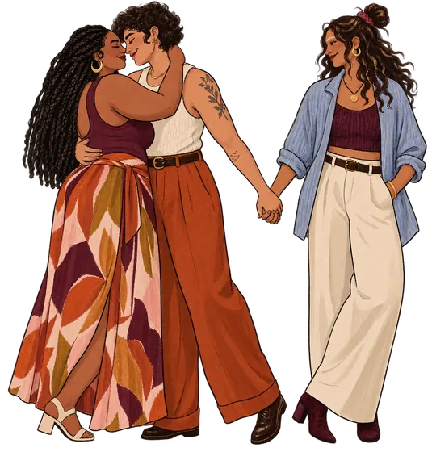

The love may still be here. What has gone missing, for this moment, is access to each other.
41 cards that walk the five moves I use in the room. Notice what arrived, name what took over, pause without disappearing, find a way back to yourself, reach again. And the wider field that is always in the room with you. One card at a time, for two people or more than two.

Don’t pick your own. Turn one for each other, or take whatever comes up. The card you would have chosen is rarely the one worth answering.
Every card is in the first person. Tell it as a story, not a verdict. The Try line is what that sounds like said out loud.
No fixing, no correcting the other person’s experience. Say back what you heard, then ask: did I get it? You don’t have to agree with it to have got it.
One card each is a whole round. Pass is a whole answer too. You are not working through a pile.
Most cards want a story rather than a yes, though some are a menu, and two words is a fine answer to those. “I cannot find it in my body” is an answer. So is “there was not one this week.” For the kitchen table, not the middle of the argument.
These cards are for ordinary relationship conflict. They are not a tool for coercive control, intimidation, threats, stalking, sexual pressure or violence. No one should be calmed, therapised or culturally pressured into staying in an unsafe conversation. Pass is a whole answer. You do not owe anyone the card you drew.
Left to right is the arc of the method. Or let the deck decide, because the card you would have picked is rarely the one worth answering.
I care about this, and I cannot do it well right now. I need minutes. I will come back at . If that time needs to change, I will tell you rather than disappear.
A pause has a return plan. Silence used to punish, frighten or control is not a pause.
These are a taster. The full deck, including the cards about the nervous system and about being kind to yourself, is used gently, together, in session. A first chat is free and takes about 15 minutes.
Not ready for a session? Get a card and an honest note, now and then →